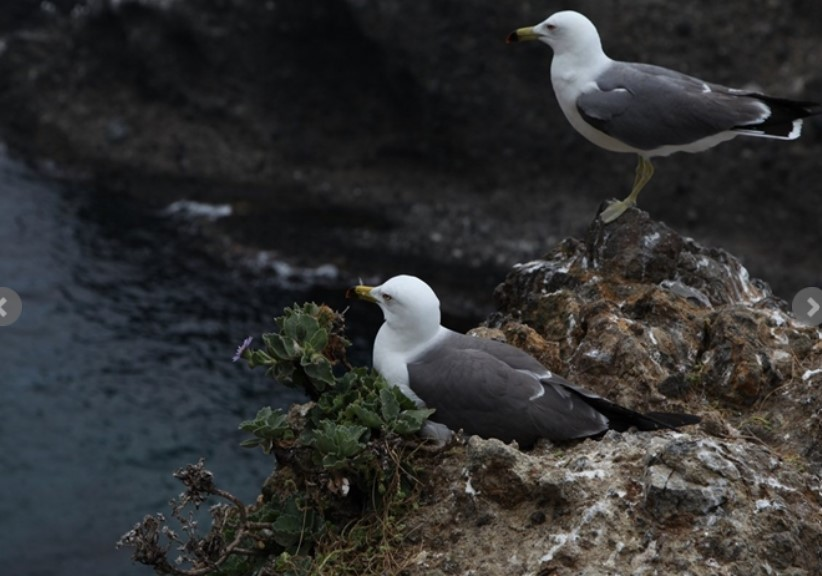

독도는 60여 종의 식물과 160여 종의 조류, 129종의 곤충과 다양한 해양 생물들이 서식하고 있고 자연생태계, 지형, 지질 등 학술적 가치가 매우 큰 지역입니다.
독도는 바다로 둘러싸여 있어 염분이 많고 습한 날씨와 강한 해풍으로 식물이 자라기 힘든 환경입니다. 그래서 독도에는 해국, 땅채송화, 민들레 등 열악한 환경에 잘 견디는 식물이 자생하고 있습니다. 또한 독도는 이동 중인 조류들의 피난처로 철새들이 많이 모여듭니다. 관찰된 조류는 약 160여 종으로 대표적으로 괭이갈매기, 슴새, 바다제비 등이 있습니다.
